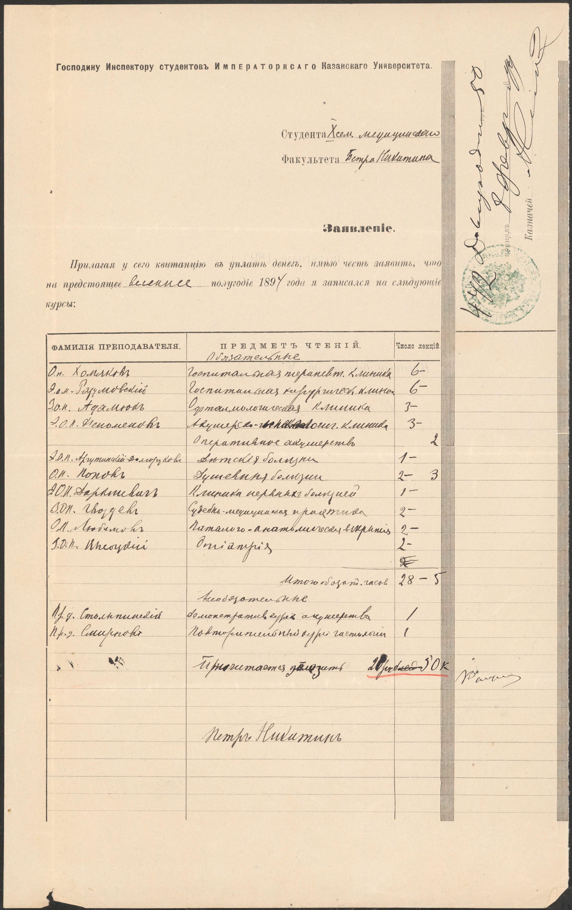

Брат моего прадеда, Никитина Сергея Борисовича - Никитин Петр Борисович.
Родился 16 июня 1867 года в Таурогене (Ныне Таураге, Литва), отец - отставной фельдфебель Шавельской инвалидной команды Никитин Борис Никитин сын, мать - законная жена его Матрена Ивановна. Восприемники: Дворянин Россиенского уезда Исидор Семенов сын Рукевич и статского унтер-офицера Иоанна Виндгиева жена Елисавета Федоровна .
Учился в Москве, 5 лет во 2й Московской гимназии и 3 года в Московской частной гимназии Фр. Креймана.
Затем - Московский университет, медицинский факультет (1887-1893), перевелся по семейным обстоятельствам в Казанский университет, который закончил в 1894 году.
Как минимум с 1898 до 1916 года был штатным ординатором Московской Алексеевской психиатрической больницы.

В списке врачей, ветеринаров, зубных врачей, фармацевтов и аптек по сведениям на 1 мая 1916 года имеется указание на Никитина Петра Борисовича, 1867 года рождения, титулярного советника, мл. ординатора психиатрической больницы на Канатчиковой даче, Москва.
В справочнике «Вся Москва» за 1915 год указано, что Никитин П.Б. являлся членом Благотворительного общества при Московской городской психиатрической больницы им. Н.А. Алексеева.
Доктор Никитин П.Б. принимал по адресу: Москва, Знаменка, 1, кв. 35 пациентов с нервными и душевными болезнями. Прием вел ежедневно, кроме пятницы и праздников, от 10 ½ до 12 часов дня.
В 1901 году старший ординатор Никитин был послан в длительную командировку в Европу для изучения передового опыта. Результатом этих поездок стали две книги.
После этого Петр Борисович стоял у истоков создания в Москве приюта имени Медведниковой для идиотов и эпилептиков и был назначен его директором. Подробно об истории приюта можно прочесть в книге Ольги Серебровской «История Научно-практического центра психического здоровья детей и подростков», которая есть в откытом доступе. Приют имел собственную кухню, прачечную, баню, а также школу с мастерскими, «чтобы развивать, будить их души, приучать к мысли, работе, исправлять немилосердную природу». Заведение носило лечебно-педагогический характер и призревало 200 детей.
В 1908 году П.Б. Никитин становится старшим врачом городского патронажа.
В 1914 году Никитин был командирован Московской городской управой на второй Всероссийский съезд по экспериментальной педагогике в Петербурге, после чего им был представлен отчет.
Во время Первой мировой войны на базе приюта действовал госпиталь для душевнобольных воинов. В 1917 году госпиталь для нервно-раненых и душевнобольных воинов был ликвидирован и врачу П.Б. Никитину поручено открытие «приюта для умственно отсталых и эпилептиков» на 200 человек в возрасте от 3 до 12 лет.
Последнее по времени из найденных мной упоминаний о Петре Борисовиче Никитине относится к 1929 году. В этом году он работал главврачом детской невропсихиатрической больницы на Канатчиковой даче на 150 коек.
.jpg)
Петр Борисович Никитин умер в Москве 06.10.1938 от "ослабления сердечной деятельности".
1. Дело призрения идиотов и эпилептиков в Западной Европе : Отчет о командировке за границу орд. Гор. психиатр. больницы им. Н.А. Алексеева П.Б. Никитина. - Москва : Гор. тип., 1901. - [2], 76 с.; 28.
2. Вспомогательные школы для отсталых детей в Германии и Швейцарии / П. Б. Никитин, ст. орд. Гор. психиатр. больницы им. Н. А. Алексеева в Москве. - М.: Гор. тип., 1911. - [2], 42 с.; 27 см. - (Материалы к вопр. об устройстве Моск. гор. обществ. управлением уч-щ для отсталых детей)
3. Второй Всероссийский съезд по экспериментальной педагогике в Петербурге: Отчет д-ра П. Б. Никитина, командир. на съезд Моск. гор. управой. - М.: Тип. Штаба Моск. воен. окр., [1914]. - 36 с.; 25 см. - Отт. из журн. "Соврем. психиатрия". 1914 г., февр.